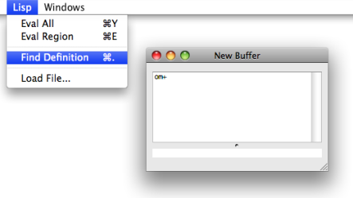

OpenMusic DocumentationHiérarchie de section : OM 6.6 User Manual > Lisp Programming > The Lisp Editor
OpenMusic DocumentationHiérarchie de section : OM 6.6 User Manual > Lisp Programming > The Lisp Editor
Navigation : page précédente | page suivante
Attention, votre navigateur ne supporte pas le javascript ou celui-ci à été désactivé. Certaines fonctionnalités de ce guide sont restreintes.
Writing/Evaluating Lisp Code : The Lisp Editor

The Lisp Editor allows to write Lisp code, or even a simple text. It basically works as a standard text editor, providing all usual text editing commands such as Cut/Copy/Paste, Open/Save/Save as, Find/Replace...
Lisp Buffers and Files
In both cases, the window is entitled "New Buffer". |

|
Lisp editors are text buffers, whose content may or not be attached or saved in any file.
To save the content of the buffer, select File / Save - Save As, choose a name and location in the dialogue window. The file name will appear at the top of the window

To open an existing file from a current buffer, choose
File / Openand select a text or lisp file.The buffer window will show the name of the file. the (that is, created with
File/Open).
Evaluation Commands
Main Commands
The results from the evaluations of the different expressions will appear in the Listener. |

Alternative Procedure

|
It is also possible to use internal Lisp buffer commands to evaluate expressions :
The result will appear in the lower text area of the window. |
Loading a Lisp File from the Listener
Lisp files can be loaded without opening them in the Lisp editor, using the Lisp / Load File command menu in the Lisp Listener.
The Lisp Listener
Finding Definitions and Information

Finding the definition of a given function or symbol may be useful when programming. This is possible from the Lisp editor or the Listener.
In the editor window or in the Listener, put the cursor on a symbol and use the Lisp / Find Definition menu or Cmd + . .
The Lisp Listener

{kind=link}
{kind=link}
Arguments Information
At typing a space after a function name in a Lisp editor, the arguments of the function will appear at the bottom of the window. |

|
Pay attention to the package[2] of the function (and type it before the function name if necessary) or the function arguments will not be displayed (and the function itself will probably not be found at evaluation).
Références :
Method
An elementary function or part of a generic function defining rules for its behaviour depending on a type of argument. Defining a generic function amounts to defining at least one method.
For instance, the OM+ function is made of four methods : 1. number + list / 2. list + number / 3. number + number / 4. list + list
Lisp Package
In Lisp, a package is a means to gather symbols, such as functions, variables or class names, within a same specific name space. You are always working in a "current" package, which can be changed with the command (in-package "my-package").
In orde to use items defined in other packages (unless these item's names are "exported" to the current package), it is generally necessary to type the package name (or "nickname"), separated by " : :", before the usual name ( Ex. : om : :om+ ).
The default package in OM is "OPENMUSIC" or "OM". The default package in Common Lisp is "CL-USER".
Plan :
Navigation : page précédente | page suivante
A propos...(c) Ircam - Centre Pompidou